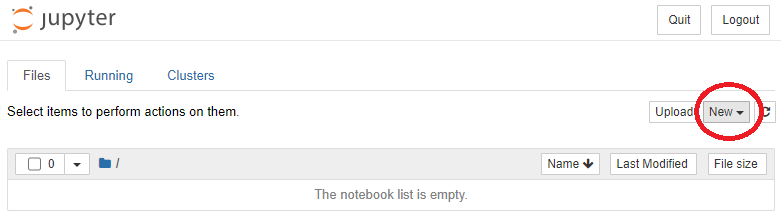
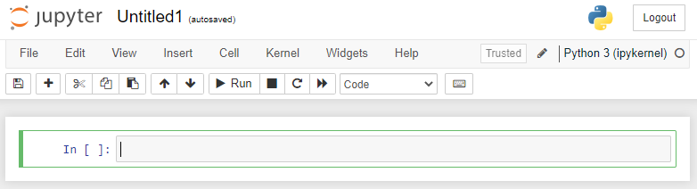
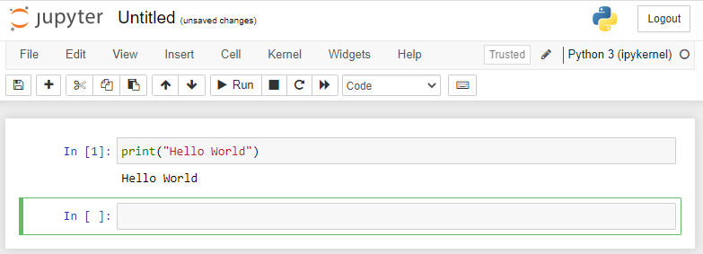
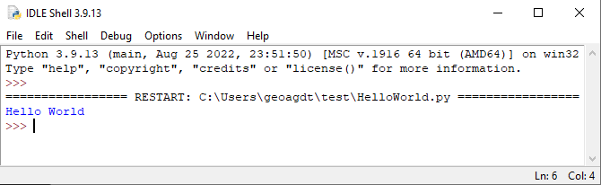
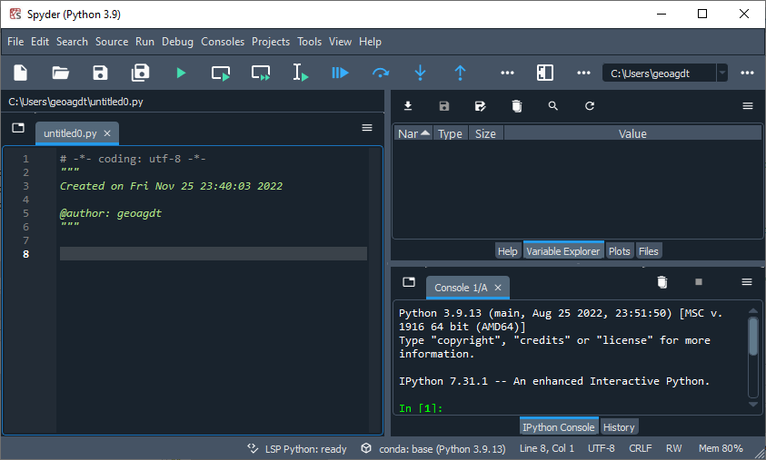
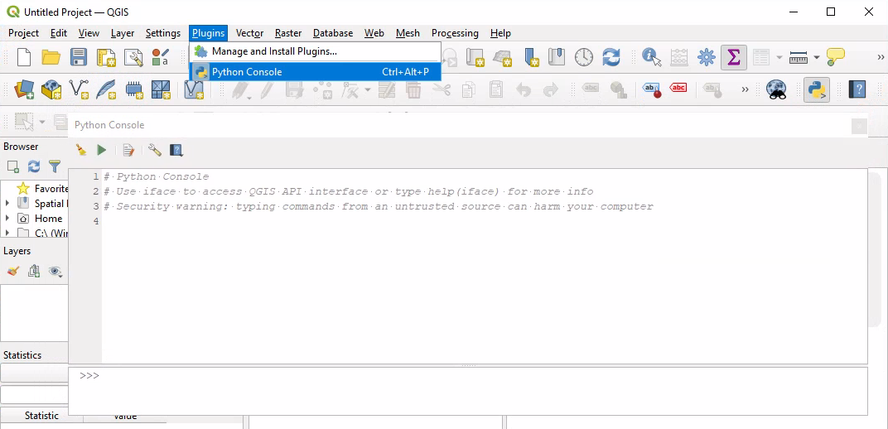

3. Running Python
Python instructions also known as 'commands' or 'statements', can be entered one at a time at a command-line interface or passed in a file.
Check if there is a version of Python already on your PATH by running a 'Terminal' or 'Command Window' and entering the following at the prompt:
python --version
If 'python' cannot be found, then it is most likely that Python is not installed. If a version of Python is available, then the version of it should be reported.
Anaconda is a data science platform. It contains: Conda - an environment manager; a Python interpreter; some commonly used third party Python packages; and, some useful additional tools. It is available at the University of Leeds via 'AppsAnywhere' using machines on campus or the 'Academic' University Windows Virtual Desktop.
Anaconda can also be download and installed. If you choose to do this, then it is recommended to select the default install options to avoid interfering with any other version of Python already installed. By default, Anaconda installs into the user home directory.
3.1. Python REPL
3.1.2. Hello World
Open an 'Anaconda prompt'. On Windows the prompt should look something like:
(base) C:\>
Here, 'base' is the activated Python environment and 'C:\' is the current drive and working directory. Enter:
python --version
This should inform you about the version of Python that came with Anaconda. Enter:
python
You should arrive at the 'Python prompt' that looks something like:
>>>
This is a Python REPL environment. Enter:
print("Hello World")
You should see the following output:
Hello World
3.1.3. Numerical calculations
The Python prompt can be used for some basic calculations. Enter:
2 + 3
You should see the result of adding the number 2 to the number 3:
5
The plus symbol '+' in this instance acts as an addition operator. This is a ' Built-in Type' operator that works with specific types of variables. Multiplication can be done similarly using an asterix '*' symbol; and division can be done using the forward slash '/' symbol.
Dividing '3' by '2' in this way results not in an integer, but in '1.5'. In some programming languages dividing by an integer will result in an integer. Indeed this used to be the case in an old version of Python!
Trying to evaluate a division by zero results in a ZeroDivisionError.
Try multiplying and dividing some numbers. Try dividing one by zero:
1 / 0
Which should result in:
Traceback (most recent call last):
File "<stdin>", line 1, in
ZeroDivisionError: division by zero
A ZeroDivisionError is an exception that is 'raised' in such circumstances. It is good to get familiar with error messages which are typically printed to the console. A key part of learning to program is about interpreting error messages and thinking about what to do to avoid and handle errors/exceptions.
Try some more calculations. Calculate '2' to the power of '64':
2 ** 64
The result is an integer with twenty digits. Try:
2 ** 1000000
The result is an integer with '301030' digits. It may take noticeably longer to compute and display this number...
One way to calculate how many digits there are is to pass the result into the str function and to pass the result of this into the len function as follows:
len(str(2 ** 1000000))
Note how things are passed into the two functions.
Increasing the exponent power by a further multiple of ten should give ten times more digits and take significantly longer to compute and display. try it:
len(str(2 ** 10000000))
While waiting for an answer, open another Anaconda prompt to look at some small numbers close to zero. Enter:
1 / 10 1 / 100 1 / 1000 1 / 10000 1 / 100000
Notice how the format of the number printed out changes with the last command. '1e-05 ' is '0.00001' in scientific notation where the letter 'e' stands for 'multiply by 10 raised to the power of'. Try:
1/(2**1074)
This will probably result in:
5e-324
Try:
1/(2**1075)
Which will probably result in:
0.0
The result is rounded down to 0.0 as this is the nearest 'Float' type number value to the true value!
3.2. Loading Modules and Using Functions
Some mathematical operators are built-in as delimiters. Others can be found in the , but they are '+' and '*' are shorthand for functions that reside in the operator module.
Enter:
operator.add(2, 3)
This should raise a NameError:
Traceback (most recent call last):
File "<stdin>", line 1, in <module>
NameError: name 'operator' is not defined
The NameError is raised as the operator module has not been imported.
Enter:
dir()
This runs (or calls) the function 'dir'. Function calls are easy to spot as after the function name there are start and end parentheses. In this function call the function is passed no arguments - as there is nothing between the start and end parentheses. The output is a list of names in the current local scope:
['__annotations__', '__builtins__', '__doc__', '__loader__', '__name__', '__package__', '__spec__']
The list is alphabetically ordered. You can tell it is a list as it starts with an open square bracket '[' and ends with a closing square bracket ']', and each item is separated with a comma ','.
To import and load the operator module and see that it is loaded, enter:
import operator dir()
The operator module should now be in the list.
Enter:
operator.add(2, 3)
Now, you should not get the NameError encountered before the operator module was imported, but a result.
The dot '.' in this command effectively instructs the Python interpreter to look in the thing on the left (of the dot) to find the thing on the right (of the dot). So, the expression looks inside the operator module for the function 'add', and passes into it the two parameters in the given order. The function returns the result of summing these two parameters as they are numbers, and the result is displayed.
To list the identifiers in the operator module, enter:
dir(operator)
It is quite a long list!
There are numerous functions that have a name starting and ending with a double underscore '__'. These are not normally called directly, but they can be.
Enter:
operator.__add__(2, 3)
Python does not exert access control on variables and functions. A naming convention is used to indicate to users whether a variable or function is meant to be accessed from outside the module. Underscores '_' and double underscores '__' at the start and/or end of identifiers have a special meaning in Python. As a general rule, you should not modify anything with these in their name directly.
Have a play and use some other functions from the operator module.
3.3. The Help System
At the Python prompt, enter:
help(operator.add)
This prints out some information about how to use the operator module function add.
Enter the following to enter the help system:
help()
The prompt should change to look like:
help>
Read what is printed:
Welcome to Python 3.9's help utility! If this is your first time using Python, you should definitely check out the tutorial on the Internet at https://docs.python.org/3.9/tutorial/. Enter the name of any module, keyword, or topic to get help on writing Python programs and using Python modules. To quit this help utility and return to the interpreter, just type "quit". To get a list of available modules, keywords, symbols, or topics, type "modules", "keywords", "symbols", or "topics". Each module also comes with a one-line summary of what it does; to list the modules whose name or summary contain a given string such as "spam", type "modules spam".
Enter:
modules
It may take a few minutes to report a set of warnings and a list of available modules:
Cython comtypes mock socks IPython concurrent modulefinder sockshandler OpenSSL conda mpmath sortedcollections PIL conda_build msgpack sortedcontainers PyQt5 conda_content_trust msilib soupsieve TBB conda_env msvcrt sphinx __future__ conda_pack multipledispatch spyder _abc conda_package_handling multiprocessing spyder_kernels _aix_support conda_token munkres sqlalchemy _argon2_cffi_bindings conda_verify mypy_extensions sqlite3 _ast configparser nacl sre_compile _asyncio constantly navigator_updater sre_constants _bisect contextlib nbclassic sre_parse _black_version contextvars nbclient ssl _blake2 cookiecutter nbconvert sspi _bootlocale copy nbformat sspicon _bootsubprocess copyreg nest_asyncio stat _bz2 crypt netbios statistics _cffi_backend cryptography netrc statsmodels _codecs cssselect networkx storemagic _codecs_cn csv nltk string _codecs_hk ctypes nntplib stringprep _codecs_iso2022 curl nose struct _codecs_jp curses notebook subprocess _codecs_kr cwp nt sunau _codecs_tw cycler ntpath symbol _collections cython ntsecuritycon sympy _collections_abc cythonmagic nturl2path sympyprinting _compat_pickle cytoolz numba symtable _compression daal4py numbergen sys _contextvars dask numbers sysconfig _csv dataclasses numexpr tables _ctypes datashader numpy tabnanny _ctypes_test datashape numpydoc tabulate _datetime datetime odbc tarfile _decimal dateutil olefile tbb _distutils_hack dbi onedal tblib _elementtree dbm opcode telnetlib _functools dde openpyxl tempfile _hashlib debugpy operator tenacity _heapq decimal optparse terminado _imp decorator os test _io defusedxml packaging test_pycosat _json diff_match_patch pandas testpath _locale difflib pandocfilters tests _lsprof dill panel text_unidecode _lzma dis param textdistance _markupbase distributed paramiko textwrap _md5 distutils parsel this _msi doctest parser threading _multibytecodec docutils parso threadpoolctl _multiprocessing email partd three_merge _nsis encodings past tifffile _opcode ensurepip pathlib time _operator entrypoints pathspec timeit _osx_support enum patsy timer _overlapped erfa pdb tinycss _peg_parser errno pep8 tkinter _pickle et_xmlfile perfmon tldextract _plotly_future_ fastjsonschema pexpect tlz _plotly_utils faulthandler pickle token _py_abc filecmp pickleshare tokenize _pydecimal fileinput pickletools toml _pyio filelock pip tomli _pyrsistent_version flake8 pipes tomlkit _pytest flask pkg_resources toolz _queue fnmatch pkginfo tornado _random fontTools pkgutil tqdm _sha1 formatter platform trace _sha256 fractions platformdirs traceback _sha3 fsspec plistlib tracemalloc _sha512 ftplib plotly traitlets _signal functools pluggy tty _sitebuiltins future poplib turtle _socket gc posixpath turtledemo _sqlite3 genericpath poyo twisted _sre gensim pprint types _ssl getopt profile typing _stat getpass prometheus_client typing_extensions _statistics gettext prompt_toolkit ujson _string glob protego unicodedata _strptime glob2 pstats unidecode _struct graphlib psutil unittest _symtable greenlet pty urllib _system_path gzip ptyprocess urllib3 _testbuffer h5py pvectorc uu _testcapi hamcrest py uuid _testconsole hashlib py_compile venv _testimportmultiple heapdict pyasn1 w3lib _testinternalcapi heapq pyasn1_modules warnings _testmultiphase hmac pyclbr watchdog _thread holoviews pycodestyle wave _threading_local html pycosat wcwidth _tkinter http pycparser weakref _tracemalloc hvplot pyct webbrowser _uuid hyperlink pycurl webencodings _warnings idlelib pydispatch websocket _weakref idna pydoc werkzeug _weakrefset imagecodecs pydoc_data wheel _win32sysloader imageio pydocstyle widgetsnbextension _winapi imagesize pyexpat win2kras _winxptheme imaplib pyflakes win32api _xxsubinterpreters imghdr pygments win32clipboard _yaml imp pylab win32com _zoneinfo importlib pylint win32con abc importlib_metadata pyls_spyder win32console adodbapi incremental pylsp win32cred afxres inflection pylsp_black win32crypt aifc iniconfig pylsp_jsonrpc win32cryptcon alabaster inspect pyodbc win32ctypes anaconda_navigator intake pyparsing win32event anaconda_project intervaltree pyrsistent win32evtlog antigravity io pytest win32evtlogutil anyio ipaddress pythoncom win32file appdirs ipykernel pytz win32gui argon2 ipykernel_launcher pyviz_comms win32gui_struct argparse ipython_genutils pywin win32help array ipywidgets pywin32_bootstrap win32inet arrow isapi pywin32_testutil win32inetcon ast isort pywintypes win32job astroid isympy pywt win32lz astropy itemadapter pyximport win32net asynchat itemloaders qdarkstyle win32netcon asyncio itertools qstylizer win32pdh asyncore itsdangerous qtawesome win32pdhquery atexit jdcal qtconsole win32pdhutil atomicwrites jedi qtpy win32pipe attr jellyfish queue win32print attrs jinja2 queuelib win32process audioop jinja2_time quopri win32profile automat jmespath random win32ras autopep8 joblib rasutil win32rcparser autoreload json re win32security babel json5 regcheck win32service backcall jsonschema regex win32serviceutil backports jupyter regutil win32timezone base64 jupyter_client repo_cli win32trace bcrypt jupyter_console reprlib win32traceutil bdb jupyter_core requests win32transaction binaryornot jupyter_server requests_file win32ts binascii jupyterlab rlcompleter win32ui binhex jupyterlab_plotly rmagic win32uiole binstar_client jupyterlab_pygments rope win32verstamp bisect jupyterlab_server rtree win32wnet bitarray jupyterlab_widgets ruamel_yaml win_inet_pton bkcharts jwt run win_unicode_console black keyring runpy wincertstore blackd keyword s3transfer winerror bleach kiwisolver sched winioctlcon blib2to3 lazy_object_proxy scipy winnt bokeh lib2to3 scrapy winperf boto3 libarchive seaborn winpty botocore libfuturize secrets winreg bottleneck libpasteurize select winsound brotli lief selectors winxpgui bs4 linecache send2trash winxptheme builtins llvmlite service_identity wrapt bz2 locale servicemanager wsgiref cProfile locket setuptools xarray calendar logging shelve xdrlib certifi lxml shlex xlrd cffi lz4 shutil xlsxwriter cgi lzma signal xlwings cgitb mailbox sip xml chardet mailcap sipconfig xmlrpc charset_normalizer markdown sipdistutils xxsubtype chunk markupsafe site yaml click marshal six yapf cloudpickle math skimage yapftests clyent matplotlib sklearn zict cmath matplotlib_inline sklearnex zipapp cmd mccabe slugify zipfile code menuinst smart_open zipimport codecs mimetypes smtpd zipp codeop mistune smtplib zlib collections mkl snappy zmq colorama mkl_fft sndhdr zoneinfo colorcet mkl_random sniffio zope colorsys mmap snowballstemmer commctrl mmapfile socket compileall mmsystem socketserver Enter any module name to get more help. Or, type "modules spam" to search for modules whose name or summary contain the string "spam".
Exactly how this list presents itself will depend on the system your are using. Enter:
operator
This should display the start of the help documentation for the operator module:
Help on module operator:
NAME
operator - Operator interface.
MODULE REFERENCE
https://docs.python.org/3.9/library/operator
The following documentation is automatically generated from the Python
source files. It may be incomplete, incorrect or include features that
are considered implementation detail and may vary between Python
implementations. When in doubt, consult the module reference at the
location listed above.
DESCRIPTION
This module exports a set of functions implemented in C corresponding
to the intrinsic operators of Python. For example, operator.add(x, y)
is equivalent to the expression x+y. The function names are those
used for special methods; variants without leading and trailing
'__' are also provided for convenience.
CLASSES
builtins.object
attrgetter
itemgetter
methodcaller
class attrgetter(builtins.object)
| attrgetter(attr, ...) --> attrgetter object
|
| Return a callable object that fetches the given attribute(s) from its operand.
| After f = attrgetter('name'), the call f(r) returns r.name.
| After g = attrgetter('name', 'date'), the call g(r) returns (r.name, r.date).
-- More --
Press the <enter> key to see the next line of the documentation. Press and hold the <enter> key and the documentation should stream to the screen. The <space> bar key streams the documentation a page at a time. The <q> key quits and should return you to the prompt.
Have a look at some documentation for other modules.
To exit the help system and return you to the Python prompt, enter:
q
To read the help for the builtins module print function, enter:
help(print)
Before learning how to run a file of Python commands, let us consider some more basic Python syntax - rules about how it must be written.
4. Basic Python Syntax
4.1. Syntax Errors
If a statement or expression is syntactically incorrect, and the Python interpreter attempts to interpret it, a SyntaxError is raised.
At the Python prompt enter:
x=
You should get the following:
File "<stdin>", line 1
x =
^
SyntaxError: invalid syntax
Essentially, the problem with this code is that the expression is incomplete: There should be something on the right of the equals sign '='.
4.2. Statements
In Python, multiple statements on a single line are separated with semicolons ';'. At the Python prompt enter:
y=1;x=y;print(x)
The output should be:
1
The code could be spaced out more and each statement could be on a separate line without the need for any semicolons:
y = 1 x = y print(x)
Individual Python statements might include multiple expressions and can be formulated over several lines. We will consider some examples of these compound statements shortly...
Python does not have a special symbol to end a statement like many other languages do.
4.3. Comments
The symbol '#' is the start of a comment. Consider the following code:
# This entire line is a comment x = 0 # This part of the line is a comment print(x) # Print out the value of x # Comments should be informative. # x = 1 # Commented code is not run.
Between pairs of matching triple quotes everything is a comment. There are two types of triple quote, those using single quotation marks, and those using double quotation marks.
Triple double quotes are used for docstrings
- a form of documentation that will be detailed later in the course.
Triple single quotes can be useful for commenting out sections of code when debugging. Consider the following code:
''' This is between triple single quotes and is a comment ''' """ This is between triple double quotes and is a comment. """ ''' """ This is both between triple single and double quotes and is a comment. """ '''
Comments can be used to help make code easier to understand and outline thinking behind some implementation or future improvements that might be made. It can be helpful to refer to other information sources in comments. It is sensible to add a comment to explain why code any code is commented out.
4.4. Code Layout
Blank lines are allowed and can help structure code into blocks. It is good practice to start each code block with a comment that outlines what the code block is for. For example:
# Initialise x and y" x = 2 y = 4 print(x) print(y) # Calculate and print x to the power of y x ** y
Indentation is syntax in Python. Indentation refers to the space that precedes expressions on a line and is sometimes called 'blank space' or 'white space'. Care is needed with indentation in Python. In particular 'spaces' and 'tabs' can make indentation appear the same when it isn't. It is recommended not to use tabs for indentation and to use multiple spaces instead.
The following is a Python code block with an example if statement:
# if x is greater than y, then print a
if x > y: # This line has the same indent as the comment above.
print(x) # This line is indented one standard step further.
print("done") # This line is indented to the previous level.
In the code above, if the variable 'x' is greater than the variable 'y', then the value of 'x' is printed. If either of the variables 'x' or 'y' has not been initialised, then a NameError will be raised.
4.5. Delimiters, Literals and Operators
Delimiters in code separate and help organise things. The following are Python delimiters:
( ) [ ] { } :
. ; @ = -> += -=
*= /= //= %= @= &= |=
^= >>= <<= **=
The various types of bracket are paired - each open bracket must be paired with a closing bracket: parentheses '()'; square brackets '[]'; and, curly brackets '{}' also known as braces.
A lot of code uses brackets. Failure to pair brackets correctly is a common reason for confusion.
Commas ',', colons ':', and dots '.' are commonly used delimeters in Python. Details of other delimiters are omitted for the time being. Some are really better thought of as operators rather than delimiters.
Operators are sequences of symbols that are shorthand for operator module functions (e.g. +, -, *, /, %)
Literals are specific numerical or text values.
4.6. Identifiers and Keywords
Identifiers are names of variables, functions, classes, modules and packages.
A Python keyword is a reserved word - a term that can't be used for an identifier.
Attempting to use a keyword as an identifier such as a variable name typically results in a SyntaxError. Enter the following at the Python prompt:
if = 2
This should result in:
File "@lt;stdin>", line 1
if = 2
^
SyntaxError: invalid syntax
The Python interpreter is expecting a conditional expression after the keyword 'if'. Recall that keywords cannot be used as identifiers.
For details, see the Python Lexical Analysis Documentation.
4.7. Style
The following code block is a Python if statement which can be read as follows: If the variable 'x' is greater than the variable 'y', then 'x' is printed, otherwise y is printed.
x = 0
y = 1
# If x is greater than y, then print x, else print y.
if x > y:
print("x", x)
else:
print("y", y)
The function print is called with two arguments, and the code contains variables, comments, indentation, operators and keywords. Styling can be used added to make it easier to identify different parts, read and understand code. The following is the same code, but coloured to make different things in the code easier to identify:
x = 0
y = 1
# if x is greater than y, then print x, else print y.
if x > y:
print("x", x)
else:
print("y", y)
print("done")
The style does not change the meaning of the code, but it hopefully makes it easier to read and understand.
Further code blocks presented in these learning resources will be colourfully styled as above.
5. Running a file of Python commands
Create a new ASCII text file, add to it the following line:
print("Hello World")
Save the file with the name "HelloWorld.py". Open an Anaconda prompt. Change to the directory where you saved the file (path_to_directory) using:
cd path_to_directory
Run the file using:
python HelloWorld.py
You should see the following printed to the console:
Hello World
If your file is on a different drive in Windows, then you may have to switch to the drive before changing to the directory within the drive. To change from drive 'C:' to drive 'M:' in Windows, enter the following at the prompt:
M:
To change back again to 'C:', enter the following at the prompt:
C:
For code in files, the statements are executed from top to bottom, but the flow may call functions which may themselves call other functions. The interpreter returns to the line of code after a function call once the function has been executed.
It is not necessary to run files of Python code from the directory in which the file is located. A path to the file can be given in the Python command. That path can be absolute (from the base of the file system) or relative (from the current directory.
6. Jupyter Notebook
null, is a REPL like system that embeds code into a document containing other information: text, images, data, and links. Code is entered in cells which when run present outputs within the document which is displayed in a Web browser (unless ouputs are configured to appear in separate windows).
Jupyter Notebook comes bundled with Anaconda and can be downloaded separately from: Jupyter.
At the Anaconda prompt change to a directory where you can write new files and enter:
jupyter notebook
Some messages should appear in the console and a Web browser tab should in the default Web browser and display the Jupyter Notebook Interface.
From the New Button drop down list of the Jupyter Notebook Interface, select:
Python 3 (ipykernel)
The New Button is highlighted with a red oval in the following
image of the interface:

A Python REPL environment should appear in another browser tab
like shown in the following image:

Enter the following in a cell and action run:
print("Hello World")
You should see something like:

Entire programs can be entered into cells as can Markdown.
Because a Jupyter Notebook application runs in a Web browser, it can utilise JavaScript - a programming language that all widely used modern Web browsers can run. Leveraging JavaScript and Python allows for the generation of some Web based interactive maps. In Section 9, there is a practical exercise about this. Prior to attempting this, it is important to learn about setting up Python environments and installing Python packages. First though, let's explore running Python code in some other ways...
7. Integrated Development Environments
Integrated Development Environments (IDEs) are software tools used to make writing code and developing software easier. This section introduces IDLE and Spyder - IDEs that come with Anaconda.7.1. IDLE
IDLE- an Integrated Development and Learning Environment for Python. The IDLE application has an 'editor window' for editing files of Python commands, and a 'console window' for entering REPL commands and displaying output. At the Anaconda prompt enter:
idle
This should open up the IDLE console window that should look
something like the image below:

As well as the Python console prompt, there is a GUI menu. Choose:
File -> Open...
Open your HelloWorld.py file. IDLE should open the file in the
editor window that looks something like:

Notice that as with a Jupyter Notebook, the code appearing in the IDLE editor window is styled.
The editor window has other menu options. Select:
Run -> Run Module
This should run the HelloWorld.py file, and output to the
console in the other window which should appear something like:

Close the instance of IDLE that is running.
7.2. Spyder
null- the Scientific PYthon Development EnviRonment, is an IDE that comes with Anaconda.
From the Anaconda prompt enter:
spyder
It may take a couple of minutes to load, when you should see
something like this:

The pane to the left is the 'editor pane'. The pane to the top right is the 'inspector pane'. The pane to the bottom right is the 'console pane'.
From the menu, choose:
File -> Open...
Open your 'HelloWorld.py' file which should appear in the editor pane. From the menu, choose:
Run -> Run
If a popup box appears choose the default and this should run
your program and output should appear in the console like in the
following image:

Use the editor and add the following in line 2:
x = y
Try to run the file again. It should raise a NameError and there should be marks against the code on line 2 on the left
and right of the editor pane. Hover your mouse cursor over the
mark on the left. You should see something similar to the image
below:

Have a look at the latest Spyder Documentation.
7.3. Other IDEs
There are other IDEs that support Python code development. If you are already familiar with an IDE that supports Python code development, then you might like to give it a try. Other IDEs that might be useful to you in future include: PyCharm, and PyDev.
8. QGIS Desktop Python Console
Geographical Information System(GIS) software are used to create, manage, process, model, visualise and distribute geographical data and information. QGIS is free and open source GIS software. It has a thriving developer and user community and a Python API. QGIS is mostly written in mixture of C++ and Python and there is are distinct client and server software. The operation of both these can be automated using Python.
QGIS Server is geared for serving out data. QGIS Desktop is both client and server software. The client software can consume data that is served out and is a general desktop application for processing geographical data. QGIS Desktop is often controlled by users via a GUI with a menu, panels and toolbars.
Load QGIS Desktop via AppsAnywhere or download, install and run it on your own device.
As QGIS Desktop software loads, a splash screen should appear. When fully loaded the GUI should appear.
From the GUI Menu select:
Plugins > Python Console
You should see something like:

There are 5 buttons, a display area and a Python prompt:
>>>
At the Python prompt enter:
dir()
A considerable amount of functionality should be listed in the display area of the Python Console.
To list the functionality of the QGIS Desktop interface, enter:
dir(iface)
PyQGIS provides programatic access to functionality that can also be accessed via the QGIS Desktop GUI. It gives greater control in data loading and processing and can be used to extend the available functionality.
In the QGIS Desktop Python console, locate and action the 'Show Editor' button. The 'editor panel' should appear on the right of the console.
Download; QGIS1.py - a Python source code file written to be run in the QGIS Desktop Python console. Read the source code, and run the program following the instructions that are in the multi-line comment at the top of the source code. (An outline of what to expect is provided in that multi-line comment.)
The import statements are at the top of the Python source code (which is good practise). Code is organised into code blocks with comments that outline what each code block does (also good practise). In this program, the import statements start with the keyword 'from' which details from which package the specified modules are imported.
The code contains some Python for statements which start with the keyword 'for'. The first of these iterates over the 'fields' in a 'layer'. The others iterate over the 'features' in a 'layer'. (Iteration simply means going through a sequence of things one at a time.
The program accesses both attribute and geometry data from a layer, and adds data into the QGIS Desktop GUI display.
Once the program has run the QGIS Desktop GUI should look
something like:

QGIS Desktop Plugins can be written in both C++ and Python. This course does not explore this further. For details see the following:
9. Python Packages and Environment Management
Packaging code and delivering it to users via repositories is good practise for numerous reasons. Some software and code repositories are programming language specific or software specific (like QGIS Desktop Plugins), components within the repositories are packaged in standard ways, and there is some process of review and some policy about package availability and removal. For details on packaging Python code see the Python Packaging User Guide- a collection of tutorials and references to help you distribute and install Python packages with modern tools.
null is a widely used Python repository. Developers deploy packages to PyPI and users install packages from there. Many packages are provided as Free and Open Source Software. PyPI also supports hosting private proprietary packages.
When installing a package in a Python environment, by default package dependencies are also installed at the same time. In Python terms, a dependency is a package, module or function that some other code needs in order to work. At the package level, for any package that is being installed, a dependency list can be generated which includes all the dependencies. Further lists can be generated that reveal what these dependencies also depend upon. A web of dependencies can emerge and the dependencies can be installed sequentially so as to only install those dependencies that depend on things that are already installed in the environment.
A criticism levelled at Python is that it can be poor at dependency management compared with other programming languages. When code in two different packages depends on different versions of a common dependency, there is what is known as a dependency conflict in Python. Python is currently not able to have multiple versions of a dependency installed in a single environment. The work around for this in Python is called orchestration which involves organising multiple Python environments with the required versions installed and getting these to work together. Such orchestration is fiddly and is regarded as an advanced topic that is not covered in this course.
Learning about creating, activating, using, deactivating and deleting Python environments is important for orchestration and for other reasons. This is covered in this section...
It is easy to pollute Python environments by installing packages (and their dependencies) that turn out not to be useful and that then get in the way - using up resources and slowing things down. This is in part because uninstalling packages and removing all their dependencies is not currently easy with Python.
The general advice when installing several packages is to install them all in one go. Some dependency conflict resolution is attempted by the installer when this is done. So, for example, if a dependency requires a version between 1.2 to 1.5 of another package and another dependency requies a version from 1.1 to 1.10, then version 1.5 would be installed as the latest version that works for all dependencies. If installations were done one at a time, it is likely that version 1.10 would end up being the version available and this might not work or might not work as expected.
Conda is a package and environment manager that comes with Anaconda. Another way to create and manage Python environments uses the Python standard library module venv and the Python Package Installer pip.
Conda is the recommended way of installing some Python packages. It is not necessarily that those packages cannot be configured and made to work using venv and pip, but that such configuration is currently more complicated. This is particularly true for some commonly used Python GIS packages, especially with installation on Microsoft Windows operating systems.
Open an Anaconda prompt, change to a directory where you can write files and enter the following command to create a list of Python packages available in the Python environment:
pip list > piplist.txt
It may take a minute or so to run. It should output an ASCII text file containing a list of names with version numbers similar to: piplist.txt.
Enter the following command to create a similar list:
conda list > condalist.txt
Again, it may take a minute or so to run. It should output an ASCII text file like similar to: condalist.txt.
Enter the following command to create an explicit list of all the conda packages saved in a file named 'spec-file.txt':
conda list --explicit > spec-file.txt
This file can be used to attempt to replicate the Python environment on another resource. For details of how to do that see: The Conda User Guide Page on Managing Environments Section on Sharing an Environment
Get a list of available Conda environments. Enter:
conda env list
The list is displayed and should look something like:
# conda environments: # base * C:\ProgramData\Anaconda3
Often users create a Python environment for a specific purpose and only specific packages are installed for that. The following set of instructions install the default Python environment that comes with Anaconda, then install in this all the packages needed for to run the examples on this page. Altogether about 2GB of space is needed in the location where you create the environment.
It is not vital that you are able to run all the examples on this page. Most of the course uses only the Python standard library and a few other pakages that are installed as needed.
Creating Python environments on Cloud storage such as on
Microsoft OneDrive or
Google Drive
is currently not recommended. On University of Leeds campus
computers or the 'Academic'
University Windows Virtual Desktop
it is recommended to create the Python environment on the
M:\ drive, for example in the following location:
M:\python\envs
Create the environment giving it a name added to the end of the directory path as follows:
conda create -p " + envPath
The -p option is the option to use a path to get conda to install the environment in a particular location. The path example given here is for Windows if using Linux or MacOS, then the path will be different. By default conda creates environments in a directory called 'envs' located wherever Anaconda is installed. In this case the environment being created is called 'myenv'. Confirm the environment creation by pressing the <y> key when prompted. Creating the environment should just take a few seconds. Once created, check it is listed:
conda env list
You should see something like what is shown below:
# conda environments: # base * C:\ProgramData\Anaconda3" myenv M:\python\envs\myenv
Details may vary depending on where you created the environment and what you called it.
Conda environments are registered/listed in the '.conda' directory in the user home directory in a file with the name 'environments.txt'.
Assuming you named your environment 'myenv', activate it by entering:
conda activate M:\python\envs\myenv
The prompt should change to have "(myenv)" prepended instead of (base)
Next install the following Python packages:
Enter:
conda install -c conda-forge contextily fiona folium geopandas pip pysal ipykernel spyder spyder-kernels=2.2
The installation may take some time... Once it is complete, install pyqt5 using pip by entering:
pip install pyqt5
Next, install 'myenv' into the 'ipykernel' so it will be available via the Jupyter Notebook interface:
python -m ipykernel install --user --name=myenv
Download; Jupyter1.ipynb, save it to a directory and start Jupyter Notebook so it can load the file.
Enter the following to run Jupyter Notebook:
jupyter notebook --NotebookApp.max_buffer_size=1073741824
This gives Jupyter Notebook twice as much memory as the current default (which helps prevent memory errors being encountered).
Wait for a Web browser tab to appear with the Jupyter Notebook interface. When it appears select:
New > myenv
Open 'Jupyter1.ipynb' read and run it cell by cell.
If for some reason that does not work, then try something simpler and copy the code below into a cell and run it.
# Simple example code
import folium
map = folium.Map(
location=(53.804, -1.555),
zoom_start=16,
control_scale=True
)
ccg = folium.Marker(
location=(53.8041954,-1.5549235),
tooltip="Centre for Computational Geography",
icon=folium.Icon()
)
ccg.add_to(map)
map
This should produce a slippy map with an icon on it that looks
something like:

From the Jupyter Notebook interface choose:
new > Python 3 (ipykernel)
Try running the same code. Most likely, the folium package is not installed in your base environment and the following error is thrown:
--------------------------------------------------------------------------- ModuleNotFoundError Traceback (most recent call last) Input In [1], in| () ----> 1 import folium 3 map = folium.Map( 4 location=(53.804, -1.555), 5 zoom_start=16, 6 control_scale=True 7 ) 9 ccg = folium.Marker( 10 location=(53.8041954,-1.5549235), 11 tooltip="Centre for Computational Geography", 12 icon=folium.Icon() 13 ) ModuleNotFoundError: No module named 'folium' |
Exit Jupyter Notebook and deactivate myenv by entering:
deactivate myenv
To remove the conda environment myenv use:
conda remove --name myenv --all
This ends the section on environment management and installing packages.
Below are key references for installing packages using pip and conda:
10. Recap and Expectations
This section of the course introduced some basic Python syntax and considered the evolution of the language. It explored running Python code in a number of ways: using the REPL environment, running files of source code; using Jupyter Notebooks; the IDLE and Spyder IDEs; and the Python environment in QGIS.
Loading modules using import statements, and accessing functionality via a dot operator was introduced.
Example if statements and for loops were provided. These key things will be used many times, so do not worry if you have not fully understood these yet.
Versioning, packaging and managing Python/Conda environments have been introduced, as has installing Python packages in Python environments.
Some example code has been provided that automates some QGIS Desktop processing. The Jupyter Notebook based example utilised Javascript capabilities of the Web browser and leveraged some widely used Python GIS tools.
This has been a broad brush overview. You might benefit from revisiting parts of this learning once you are more familiar with developing Python code and as you think about undertaking projects.